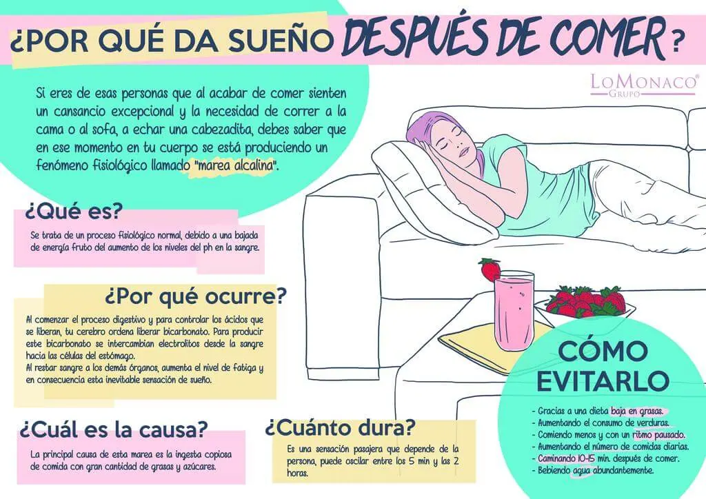

¿Por qué nos entra sueño después de comer?

¿POR QUÉ NOS ENTRA SUEÑO DESPUÉS DE COMER?
¿Eres de los que después de comer, tienes que ir corriendo a dormir a la cama o al sofá? ¿Sientes la necesidad imperiosa de echar una cabezadita justo al acabar de almorzar?
¿Por qué da sueño después de comer?
Si te entra sueño después de comer, debes saber que en tu organismo está ocurriendo un fenómeno fisiológico llamado “marea alcalina” y que es responsable de esta sensación de somnolencia..
¿Qué es la marea alcalina?
A la hora de explicar por qué después de comer da sueño, es fundamental conocer este concepto. Se trata de un proceso fisiológico natural y habitual que ocurre en nuestro organismo, fruto del aumento de los niveles de ph en sangre, que además parece depender incluso del tipo de alimentos ingeridos. Es habitual que nos afecte la marea alcalina después de comer, lo que nos puede inducir al sueño.
¿Por qué ocurre la marea alcalina postprandial?
Al comenzar el proceso digestivo y para controlar los ácidos que se liberaran, el cerebro ordena liberar bicarbonato para compensar. Para la producción de este bicarbonato, se intercambian electrolitos desde la sangre hasta las células del estómago. Al restar flujo sanguíneo a otros órganos, aumenta la sensación de fatiga y sobreviene una inevitable sensación de sueño.
La causa principal de la marea alcalina, es ingerir una copiosa comida sobre todo si incluye gran cantidad de grasas y altos niveles de azúcar. Los niveles de glucosa en sangre influyen mucho en los efectos de la marea alcalina.
¿Cuánto dura normalmente esta sensación de cansancio y adormecimiento?
Es una sensación pasajera que suele durar entre cinco minutos y dos horas, aunque la duración es variable y depende de la persona.
¿Cómo podemos evitar que ocurra la marea alcalina?
A la hora de tratar de evitar que que nos dé mucho sueño después de comer tenemos varias opciones que debemos tener en cuenta:
- Debemos evitar los alimentos ricos en grasas, en especial las comidas copiosas, las carnes rojas y los hidratos de carbono.
- Es conveniente llevar una dieta en la que abunden frutas y verduras.
- Hay que procurar comer pausadamente y no ingerir grandes cantidades.
- Come razonablemente 5 veces al día.
- Se recomienda caminar 10-15 minutos después de comer.
- También es muy recomendable beber abundante agua.